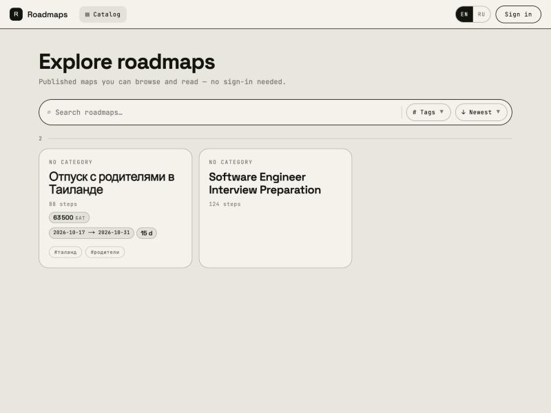
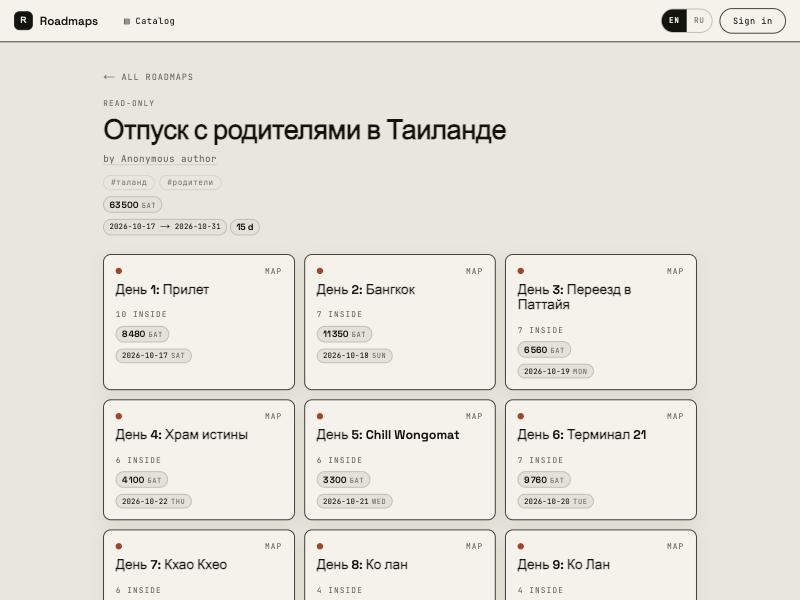
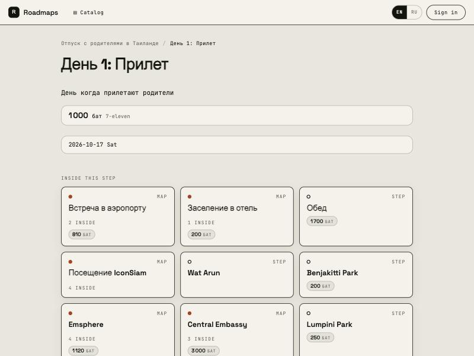

← Back to the home page
Pet project
99node
Solo - full stack
A roadmap builder. You lay out a map for a topic - "Python Programmer", "A holiday in Thailand" - then drill into any step and build a sub-roadmap inside it, to any depth. A map can be published to a catalogue and read without an account.
What separates it from a mind map is depth rather than canvas size. There is no single infinite sheet: every node is a plane of its own with local coordinates.
~20 000
Lines of TypeScript
web 12.9k, api 5.5k, shared 1.7k
12 / 15
Tables / migrations
PostgreSQL 16
~7 ms
Weight rollup over a subtree
1 500 nodes, recursive CTE
~10 ms
Period rollup over a subtree
Same map, same read path
How it works



Stack
Next 15React 19PixiJS 8NestJS 10Prisma 5PostgreSQL 16Turborepopnpm